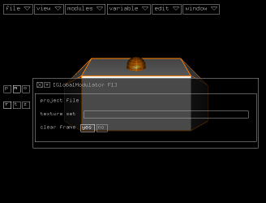
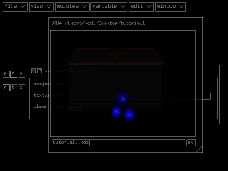
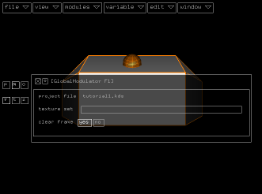
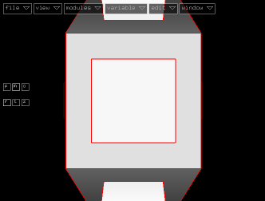
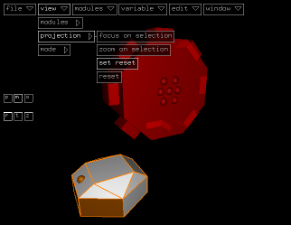
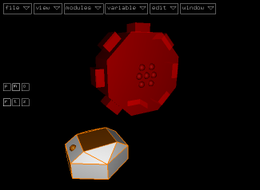
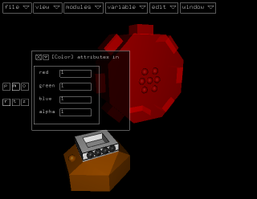

Project Setup
After starting the program, activate file > close, to make
sure you don't change any loaded project (when started, kodisein automatically
loads the last edited project).
What you see is the global
modulator, which will be present in all your projects. Open
the inspector by activating
window > show inspector to see what the global modulator
has to offer.

Right now, we are only interested in the field "project file",
which is empty. Lets fill it by saving the (empty) project...
Saving a Project File
Activating file > save as ... and entering a filename
in the file browser's
file selection
field will do the job.

After clicking the ok button, the filebrowser disappears and
the new filename will be displayed behind the field "project file"
in the global modulator's inspector.

From now on, you can save the project whenever you want by activating
file > save or pressing it's keyboard shortcut ALT_s.
(A small note: your workflow will be much faster by using keyboard
shortcuts. See the shortcuts
page for a list of default shortcuts and how to redefine them).
Close the inspector by clicking the cross in it's upper left corner
or activating window > hide inspector.
Without an Eye You will See Nothing
Every project needs at least one camera
module, so let's create one by activating modules >
objects > camera.

The camera module will be centered and overlap with the global
modulator, so zoom out
and rotate a little bit
and move the global modulator aside.

Save the new view as the default view by activating view > projection
> set reset.
From now on, just in case you get lost in space, you can always return
to this view by activating view > projection > reset.
The Background Attribute
The default background color of a scene is black. You can change it
to white by selecting the background attribute connector
of the global modulator (the square face on it's top) ...

... and connecting a color
attribute module to it by activating
modules > attributes > color.

When opening the inspector again, you will see that the color is already
set to white, so you don't have to change it's values.
If you now change to play mode
(window > start animation), you should see a white screen.
Press m or p again to return to the module mode.
Let's save the project file and continue with the next
step...

|